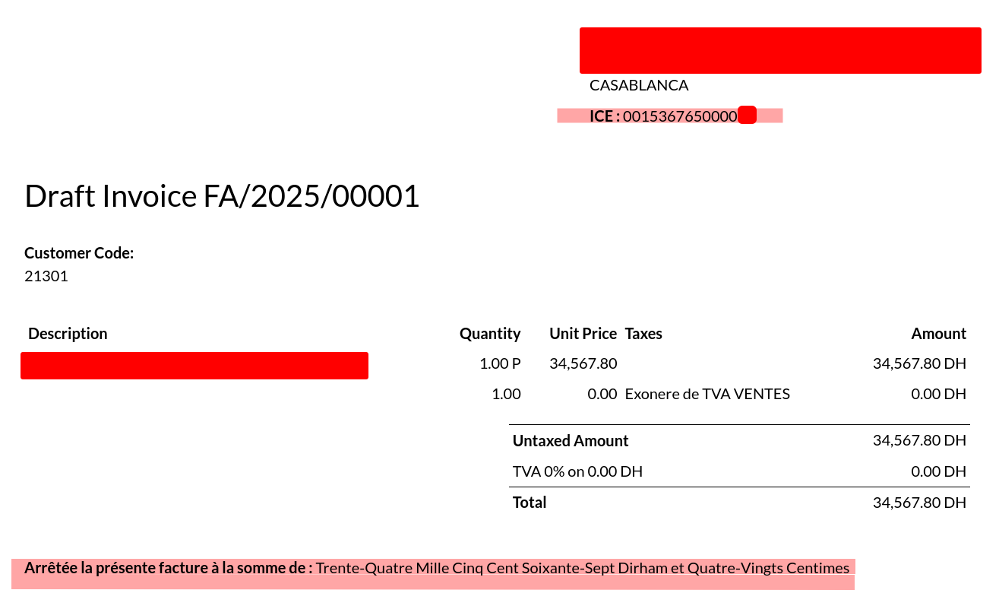

Gestion de l’ICE au Maroc
Ce module ajoute le champ ICE (Identifiant Commun de l’Entreprise)
aux partenaires Odoo, obligatoire sur les factures au Maroc.
- Ajout du champ ICE dans les partenaires
- Affichage de l’ICE sur les factures
- Conformité légale marocaine
- Ajout du montant total de la facture en lettre
- Conformité légale marocaine
- facturation marocaine
